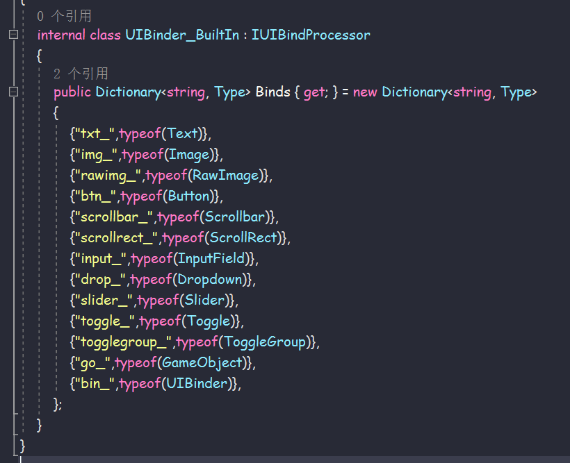
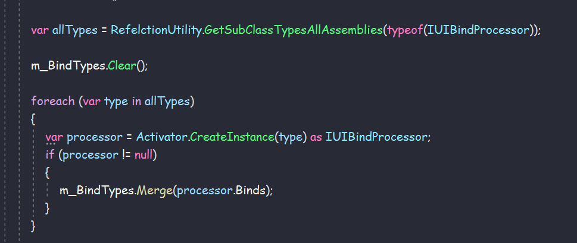
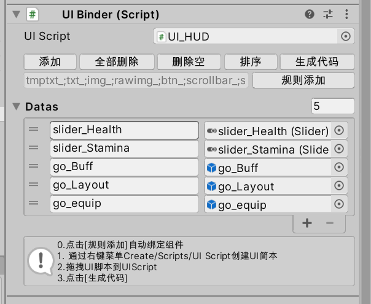
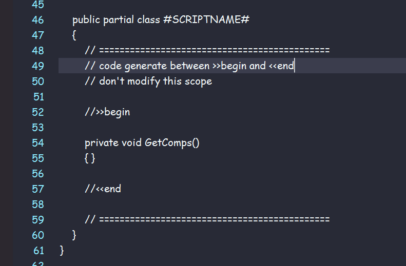
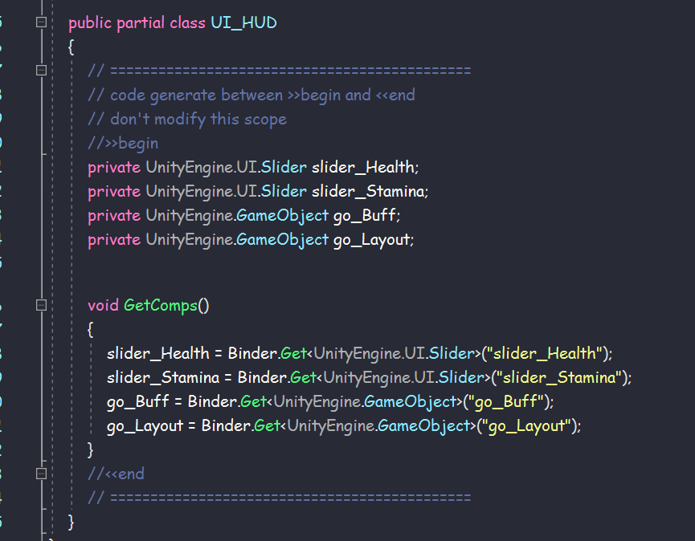

ugui组件绑定和代码生成 2021-10-29- 2022-01-09 154- 1m- unity-uguicodegen基于ET ReferenceCollector 的UI代码自动生成 生成细节 配置ui类型，使用反射获取字符串-ui类型 键值对。使用接口反射的目的是为了分程序集，可以方便每个项目自定义扩展。 根据1中的配置，递归收集字段实例，并序列化到容器中，得到 字符串-ui组件实例 键值对。 根据键值对生成代码。利用partial技术，以及uibinder(Mono脚本)直接引用uiscript，可有效简化操作，适应大多数情况。要扩展到lua，也非常容易。 补上代码     本文作者：Sarofc本文链接：https://sarofc.gitee.io/2021/10/29/unity/%E5%9F%BA%E7%A1%80%E6%A1%86%E6%9E%B6/ugui%E7%BB%84%E4%BB%B6%E7%BB%91%E5%AE%9A%E5%92%8C%E4%BB%A3%E7%A0%81%E7%94%9F%E6%88%90/版权声明：本博客所有文章除特别声明外，均默认采用 许可协议。